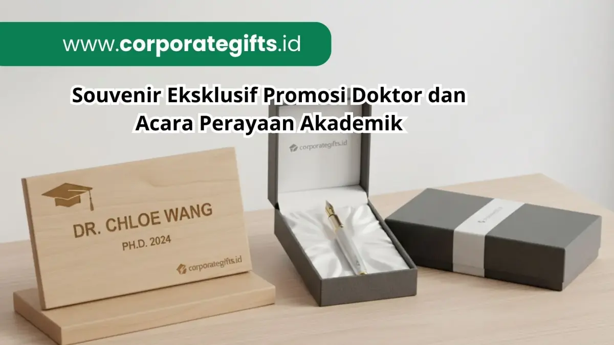

Corporate Gifts ID - Souvenir promosi doktor adalah hadiah kenang-kenangan yang diberikan universitas atau fakultas kepada lulusan program doktor, dosen penguji, dan tamu kehormatan pada acara wisuda atau promosi doktor. Pemilihan souvenir akademik yang tepat, seperti plakat kustom, pulpen eksklusif, atau notebook berlogo, tidak hanya menjadi simbol penghargaan atas pencapaian intelektual, tetapi juga berfungsi sebagai strategi branding yang memperkuat citra profesional institusi.
Poin Kunci Souvenir Promosi Doktor:
- Simbol Pencapaian Tertinggi: Souvenir promosi doktor merefleksikan dedikasi intelektual dan prestise pencapaian gelar doktor tertinggi.
- Media Branding Kampus: Cinderamata resmi seperti plakat kustom dan pulpen grafir memperkuat reputasi akademik universitas di mata tamu kehormatan.
- Personalisasi Eksklusif: Grafir nama penerima, judul disertasi, atau logo fakultas memberikan sentuhan emosional yang bernilai historis.
- Kurasi Multi-Audiens: Format souvenir dibedakan secara proporsional untuk dosen penguji, tamu VIP, dan lulusan doktor.
Peran Souvenir dalam Branding Universitas dan Institusi Akademik
Souvenir bukan sekadar kenang-kenangan biasa. Dalam konteks akademik formal, produk ini berfungsi sebagai media branding universitas yang merepresentasikan reputasi, nilai luhur, dan tradisi intelektual institusi. Misalnya, ketika fakultas memberikan merchandise akademik berupa plakat kustom, agenda kulit, atau pulpen eksklusif dengan logo universitas, citra lembaga ikut terangkat secara signifikan.
Bagi tamu kehormatan, penguji luar (eksternal), dan mitra industri, souvenir dapat menjadi simbol penghormatan yang mencerminkan profesionalitas tata kelola perguruan tinggi. Sedangkan bagi mahasiswa doktoral yang baru mempertahankan disertasinya, hadiah tersebut adalah pengingat abadi atas perjalanan akademik yang penuh perjuangan. Dengan strategi kurasi yang matang, souvenir akademik mampu mempererat koneksi emosional civitas akademika sekaligus memperluas eksposur reputasi universitas di kancah nasional.
Jenis Souvenir yang Cocok untuk Promosi Doktor
Pemilihan souvenir harus diselaraskan secara teliti dengan skala seremonial acara dan profil masing-masing penerima. Berikut adalah ide souvenir pilihan yang sangat ideal untuk perhelatan akademik, khususnya sidang terbuka promosi doktor.
Merchandise Custom untuk Branding Fakultas
Produk custom seperti notebook eksklusif dengan sampul emboss logo universitas, totebag kanvas premium berdesain minimalis, atau tumbler vacuum stainless steel food-grade dapat dijadikan merchandise resmi fakultas. Selain berdaya guna tinggi, produk fungsional ini akan digunakan dalam aktivitas sehari-hari sehingga memperpanjang umur eksposur branding kampus.
Souvenir Eksklusif untuk Dosen dan Tamu VIP
Untuk dewan penguji, promotor, ko-promotor, maupun tamu kehormatan pimpinan universitas, pilihlah cinderamata kelas VIP seperti plakat kristal optik presisi, map sertifikat berbahan kulit sintetis, atau pulpen rollerball berbahan logam berbalut grafir laser nama lengkap beserta gelar. Sentuhan personalisasi ini menghadirkan rasa dihargai yang sangat mendalam atas kontribusi akademik mereka.

Ragam pilihan souvenir akademik premium seperti plakat kristal kustom dan pulpen eksekutif berlogo universitas.
Produk Premium untuk Mahasiswa Lulusan Doktor
Bagi lulusan yang baru meraih gelar doktor, hadiah yang merepresentasikan pencapaian puncak studi sangat bernilai sentimental. Beberapa pilihan yang paling dicari meliputi bookmark logam berlapis emas, kotak pensil kayu solid dengan grafir laser kaligrafi nama, serta pouch kulit profesional untuk perlengkapan kerja. Cinderamata ini tidak hanya berfaedah praktis, namun juga menjadi memorabilia membanggakan sepanjang karier akademis atau profesional mereka.
Tabel Rekomendasi Souvenir Acara Akademik & Promosi Doktor
Untuk mempermudah panitia wisuda maupun keluarga dalam merencanakan cinderamata, tabel berikut merangkum klasifikasi souvenir berdasarkan target penerima:
| Penerima / Momen | Rekomendasi Souvenir | Karakteristik & Personalisasi |
|---|---|---|
| Dewan Penguji & Promotor | Pulpen Logam Premium & Plakat Kristal | Grafir laser nama dosen, gelar akademik, dan kotak beludru mewah |
| Lulusan Doktor (Wisudawan) | Notebook Kulit Agenda & Pouch Organizer | Emboss logo fakultas, tahun angkatan kelulusan, dan bookmark logam |
| Tamu Kehormatan VIP & Mitra | Executive Gift Set / Smart Tumbler SUS304 | Hardbox kustom magnetik berlogo universitas resmi dan kartu ucapan |
| Peserta Sidang Terbuka | Totebag Kanvas & Pulpen Promosi Kustom | Sablon logo presisi, efisien anggaran, dan bernilai guna tinggi |
Manfaat Kerjasama dengan Vendor Souvenir Profesional
Mengelola perhelatan akademik formal seperti sidang promosi doktor dan wisuda pascasarjana menuntut kehati-hatian tinggi. Menjalin kemitraan dengan vendor corporate gift berpengalaman memberikan aneka keuntungan strategis:
- Kualitas Material Terjamin: Setiap produk diproduksi menggunakan material berstandar tinggi yang awet, elegan, dan mencerminkan martabat kampus.
- Layanan Desain & Mockup Kustom: Universitas dapat menyesuaikan penempatan lambang logo, palet warna resmi fakultas, dan tipografi khusus sebelum proses produksi berjalan.
- Ketepatan Waktu Produksi: Manajemen alur kerja profesional menjamin pesanan selesai tepat waktu menjelang jadwal sidang senat atau seremonial wisuda.
- Konsistensi Brand Guideline: Semua item cinderamata dirancang serasi dan mematuhi panduan identitas visual institusi secara ketat.
Melalui dukungan vendor terpercaya, souvenir tidak lagi sekadar menjadi bingkisan seremonial sesaat, melainkan bagian terpadu dari strategi corporate gifting yang mengukuhkan kredibilitas institusi.
Souvenir Perusahaan sebagai Investasi Branding Akademik
Perayaan akademik, terutama promosi doktor, bukan hanya sekadar seremoni keberhasilan individu, melainkan juga cerminan keunggulan mutu pendidikan perguruan tinggi yang menaunginya. Oleh karena itu, memilih souvenir akademik yang tepat merupakan investasi jangka panjang dalam membangun persepsi publik yang positif.
Dengan mempertimbangkan aneka kurasi souvenir promosi doktor yang premium, eksklusif, dan sarat fungsi, setiap perhelatan wisuda akan meninggalkan jejak kesan yang membekas di hati seluruh hadirin.
Jika institusi atau fakultas Anda sedang mempersiapkan agenda sidang promosi doktor atau wisuda akbar, kini saatnya berkonsultasi dengan tim ahli kami untuk mewujudkan cinderamata akademik berkelas. Simak juga panduan mendalam kami lainnya mengenai pengadaan cinderamata wisuda di Souvenir Promosi Doktor Premium yang Membuat Acara Lebih Berkesan.
Pertanyaan Seputar Souvenir Promosi Doktor (FAQ)

Ditulis oleh: Arinda Zakia
Senior Corporate Gifting SpecialistSpesialis riset merchandise korporat, kurasi cinderamata akademik perguruan tinggi, dan strategi corporate branding berpengalaman lebih dari 7 tahun dalam industri cinderamata Indonesia.
Lihat Profil Lengkap & Panduan Lainnya